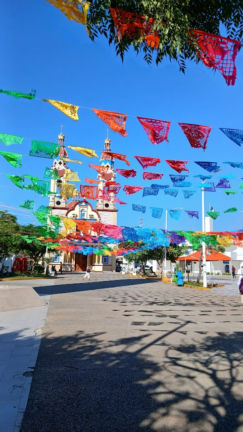
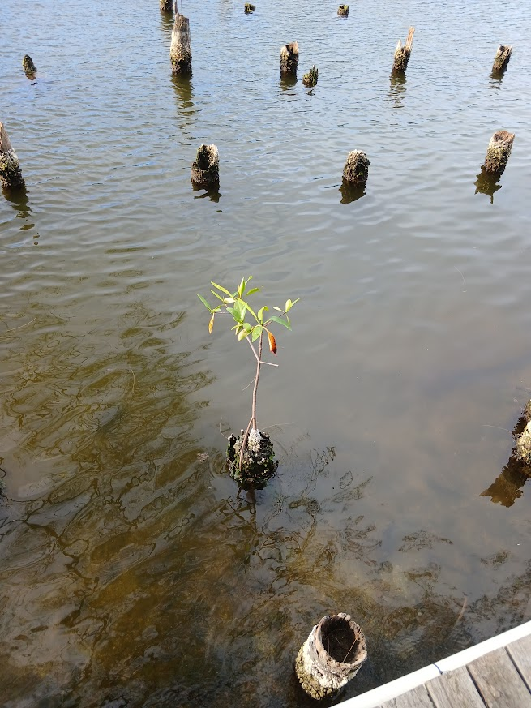
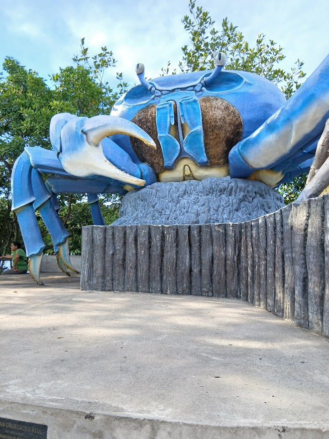

Lugar 1: Paraíso y Puerto Ceiba
Mi primer recorrido fue en el hermoso municipio de Paraíso. Comencé el viaje caminando por el parque central, disfrutando del ambiente tranquilo y la vida cotidiana de este rincón tabasqueño. Después de un rato, me dirigí hacia Puerto Ceiba. Llegar ahí fue increíble; la vista del agua y la brisa te conectan de inmediato con la naturaleza. Es un lugar perfecto para relajarse, admirar los paisajes acuáticos y despejarse por completo. Fue un paseo corto, pero lleno de contrastes hermosos que valió la pena documentar.


